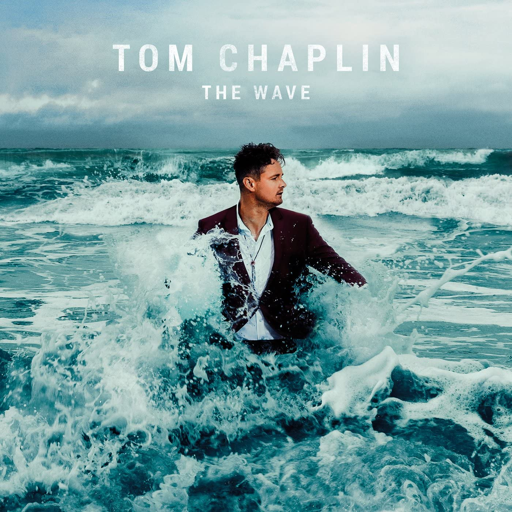

The Wave
Tom Chaplin
The Wave é o álbum de estreia do cantor e compositor Tom Chaplin, lançado em outubro de 2016 pela gravadora Island Records. Repertório autoral gerado após processo de depressão e de abuso de drogas vivido pelo cantor, foi anunciado desde 2013, quando sua banda Keane entrou em hiato.
Ver Discografia
